![]()
components_idm = ~ Intercept(1) +
elevation(elevation_raster, model = "linear") +...+ spatial_field(geometry, model=matern) +
alpha_0(1,mean.linear= 3, prec.linear= 1/2.72) + alpha_1(1,mean.linear =1, prec.linear= 1/2.72)
formula_occ = inla.mdata(Y, X) ~ log(.data.$radius) + Intercept + elevation + ... + spatial_field
formula_thinn = geometry ~ Intercept + elevation + ...+ spatial_field +
log_detect(xy = geometry,p1 = alpha_0, p2 = alpha_1)
lik_occ = bru_obs(formula = formula_occ,
family = "occupancy",
data = bba_sf,
response_data = list(X = X_mat,Y = Y_mat),
control.family = list(control.link = list(model = "cloglog"),
link.simple = "logit"))
lik_thinn = bru_obs("cp",
formula = formula_thinn ,
data = ebird_sf ,
samplers = penn_state,
domain = list(geometry = mesh))
fit_IDM = bru(components_idm , lik_occ , lik_thinn)Combining Efforts
Integrating Citizen Science and Survey Data using inlabru
2026-06-01
“doing what little one can to increase the general stock of knowledge is as respectable an object of life, as one can in any likelihood pursue.”
Charles Darwin
Monitoring species distributions
Imagine planning a city without knowing where people live. This is exactly what we risk doing in conservation if we don’t accurately map where species exist—and why.
Monitoring species distributions
Biodiversity monitoring programs have become essential to understand species distributions.
The modelling of species distributions is important for both theoretical and applied ecology.
The analysis of species distribution data is challenging
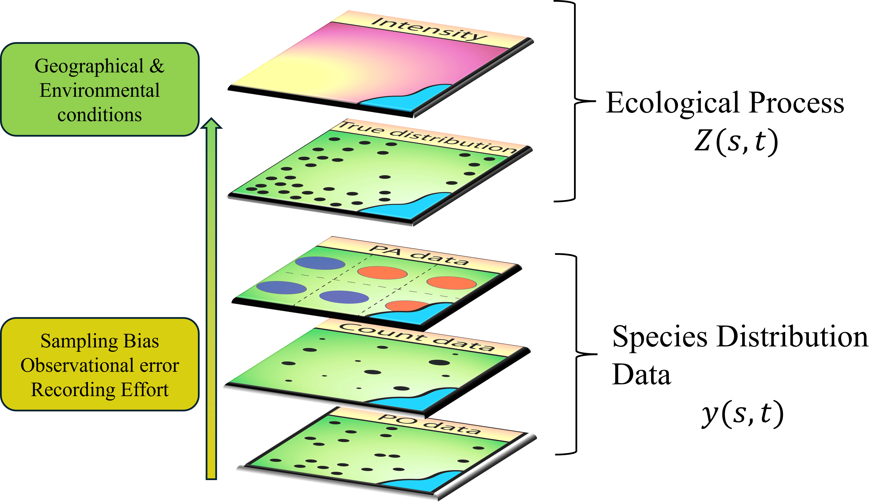
The Challenge of Data
The information available for species distributions models is radically changing
New opportunities for surveying wildlife in space and time.

The Challenge of Data
The information available for species distributions models is radically changing
New opportunities for surveying wildlife in space and time.
As the volume of recorded ecological data continues to grow, so does the need for computationally efficient methods for fitting complex models.
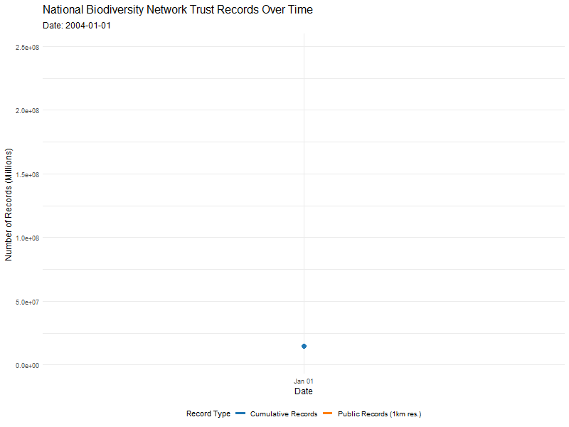
INLA in Ecology
The R-INLA package has become a powerful tool for fitting complex models in ecology.
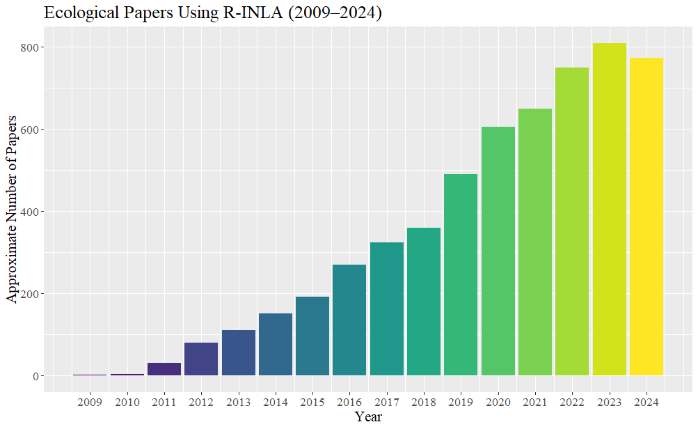
Google scholar search (13/06/2025)
What is INLA and inlabru?
- Short Answer
The Integrated Nested Laplace Approximation (INLA) is a fast method to do Bayesian inference with latent Gaussian models and
inlabruis an R-package that implements this method with a flexible and simple interface.
What is INLA and inlabru?
- Short Answer
The Integrated Nested Laplace Approximation (INLA) is a fast method to do Bayesian inference with latent Gaussian models and
inlabruis an R-package that implements this method with a flexible and simple interface.
- The (much) longer answer
- Rue, H., Martino, S. and Chopin, N. (2009), Approximate Bayesian inference for latent Gaussian models by using integrated nested Laplace approximations. Journal of the Royal Statistical Society: Series B (Statistical Methodology), 71: 319-392.
- Van Niekerk, J., Krainski, E., Rustand, D., & Rue, H. (2023). A new avenue for Bayesian inference with INLA. Computational Statistics & Data Analysis, 181, 107692.
- Lindgren, F., Bachl, F., Illian, J., Suen, M. H., Rue, H., & Seaton, A. E. (2024). inlabru: software for fitting latent Gaussian models with non-linear predictors. arXiv preprint arXiv:2407.00791.
- Lindgren, F., Bolin, D., & Rue, H. (2022). The SPDE approach for Gaussian and non-Gaussian fields: 10 years and still running. Spatial Statistics, 50, 100599.
Why INLA?
Ecological systems are inherently complex
The way we observe these processes also matter!
sometimes we do not observe what is actually there …
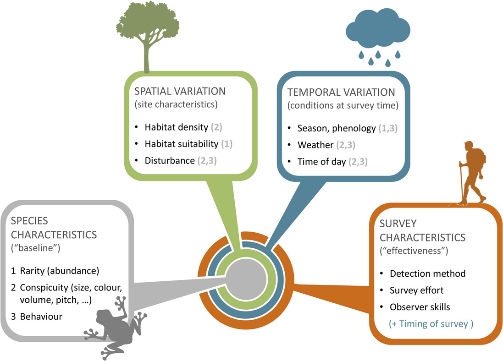
The problem with detection

The problem with detection

Possible biases due to imperfect detection
Underestimation of species distribution
Bias of the estimated relationship with covariates
Predictive models might reflect detection instead of occurrence
The Occupancy model for survey data
Basic idea: Data contain information about two processes:
The species occupancy (ecological process)
The detection (observation process)
Basic model form
Ecological process
\[ z_i\sim\text{Bernoulli}(\psi_i) \]
Observation process
\[ y_{ij}\mid z_i=z_i\sim\text{Bernoulli}(p_{ij}) \]
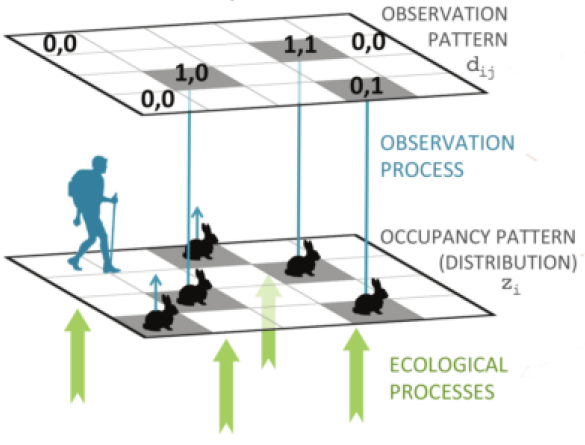
The Occupancy Model for Species Distributions
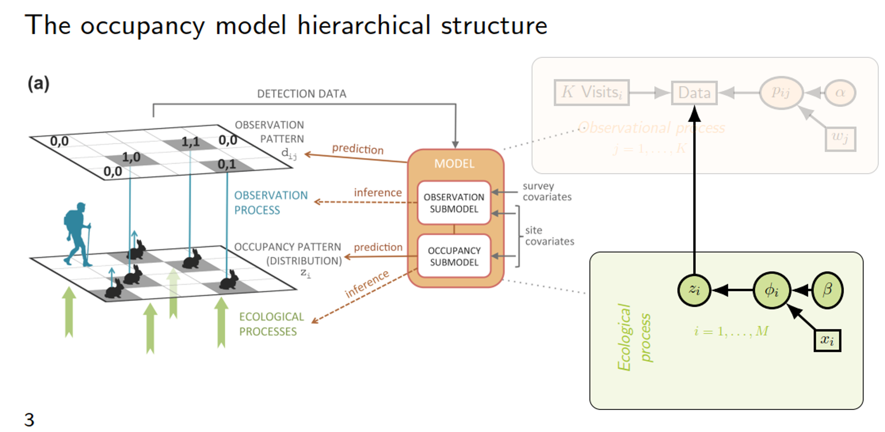
The Occupancy Model for Species Distributions
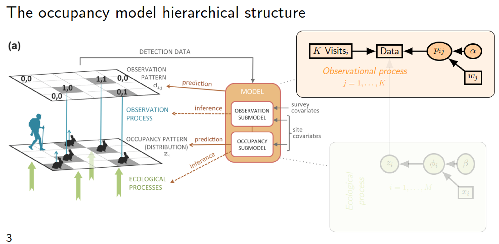
Occupancy Models in INLA
For a set of set of \(M\) discrete sites, let the detection history of the \(i\)th site \(\mathbf{d}_i= y_{i1},\ldots,y_{iK}\).
The joint likelihood is then:
\[ \begin{aligned} L(\pmb{\psi},\textbf{p}|\mathbf{y}_1,\ldots,\mathbf{y}_M) &= \underbrace{\prod_{i=1}^{m} \left[\psi_i \prod_j^{K_i} p_{ij}^{y_{ij}} (1-p_{ij})^{1-y_{ij}}\right]}_{\text{sites with at least one detection}}\underbrace{\prod_{i=m+1}^M\left[\psi_i\prod_j^{K_i}(1-p_{ij})+(1-\psi_i)\right]}_{\text{sites with only 0's}}. \\ &= \prod_{i=1}^{M} \left[\psi_i \prod_j^{K_i} p_{ij}^{y_{ij}} (1-p_{ij})^{1-y_{ij}} + \mathbb{I}_{\sum_j y_{ij} = 0}(1-\psi_i) \right], \end{aligned} \]
The likelihood for occupancy model is factorized into univariate models for the marginal distribution of each site detection history.
\[ L(\pmb{\psi},\textbf{p}\|\mathbf{y}\_1,\ldots,\mathbf{y}*M) =* \prod{i=1}^{M} \left[\psi_i \prod_j^{K_i} p_{ij}^{y_{ij}} (1-p_{ij})^{1-y_{ij}} + \mathbb{I}_{\sum_j y_{ij} = 0}(1-\psi_i) \right] \]
Estimating Occupancy Models in INLA
Belmont et al. (2024) show how this a LGM (and thus possible to be fitted using INLA ) under these conditions:
Detection histories are conditional independent given the occurrence and detection probabilities.
Considering detection probabilities \(p\) as hyperparameters and link the linear predictor \(\eta_i\) to the probability of occurrence \(\psi_i\) via a known link function \(g(\cdot)\).
Assume a Gaussian prior for \(\eta_i\).
The linear predictor \(\eta_i\) can include covariates, smooth terms, random effects, etc. e.g., \[g(\psi_i)=\beta_0 +X'\beta + \omega(s)\]
While the detection model is compromised by a less complex structure where only a limited number of site or survey level covariates can be included, e.g., \[\text{logit}(p_{ij})= \gamma_0 + \gamma_1 \times w_{ij} + \ldots\]
Planned Survey Data
Structured data from planned surveys has been a primary source of information for modelling species distributions
- Structured data involves constant monitoring schemes using standardised methods at sites on a regular basis.
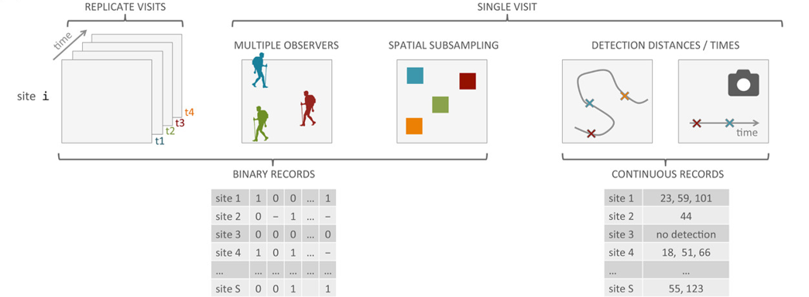
Figure modified from (Guillera-Arroita 2016)
Planned Structured Survey Data
Traditionally, researchers would need to choose between analysing small quantities of structured data and large quantities of unstructured data.
Structured data involves constant monitoring schemes using standardised methods at sites on a regular basis.
These are expensive to collect and tend to be geographically and temporally restricted.
Occupancy models and citizen science
Citizen science projects offer a cost-effective solution to investigate species distributions at large spatial and temporal scales.
Citizen science \(\neq\) complete lack of structure
semi-structured surveys
opportunistic encounters
Analysing de distribution of Ringlet butterfly in the UK
We analysed the distribution of the Ringlet butterfly (Aphantopus hyperantus) using \(>\) 2 million records from 140,887 unique 1 km\(^2\) from the BNM programme between 1970 and 2014.
- Occupancy model framework where
\[ \begin{aligned} y_{ijt} = \begin{cases} 1 & \text{if Ringlet is on checklist } i \text{ on visit } j \text{ during year } t\\ 0 & \text{any species other than Ringlet is recorded}\end{cases} \end{aligned} \]
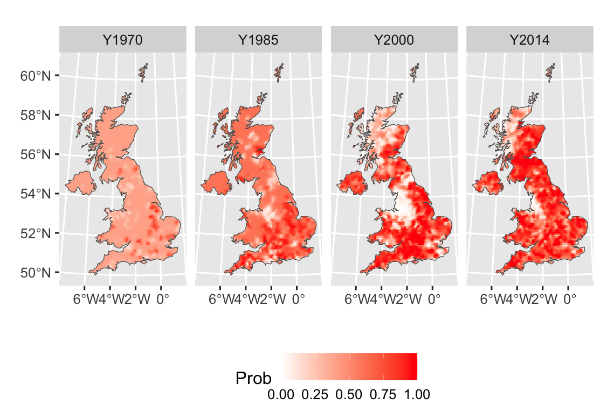
Analysing de distribution of Ringlet butterfly in the UK
We analysed the distribution of the Ringlet butterfly (Aphantopus hyperantus) using \(>\) 2 million records from 140,887 unique 1 km\(^2\) from the BNM programme between 1970 and 2014.
Occupancy model framework where
Relative list length and date of visit allow us to account for varying sampling effort and seasonality in detection probabilities.
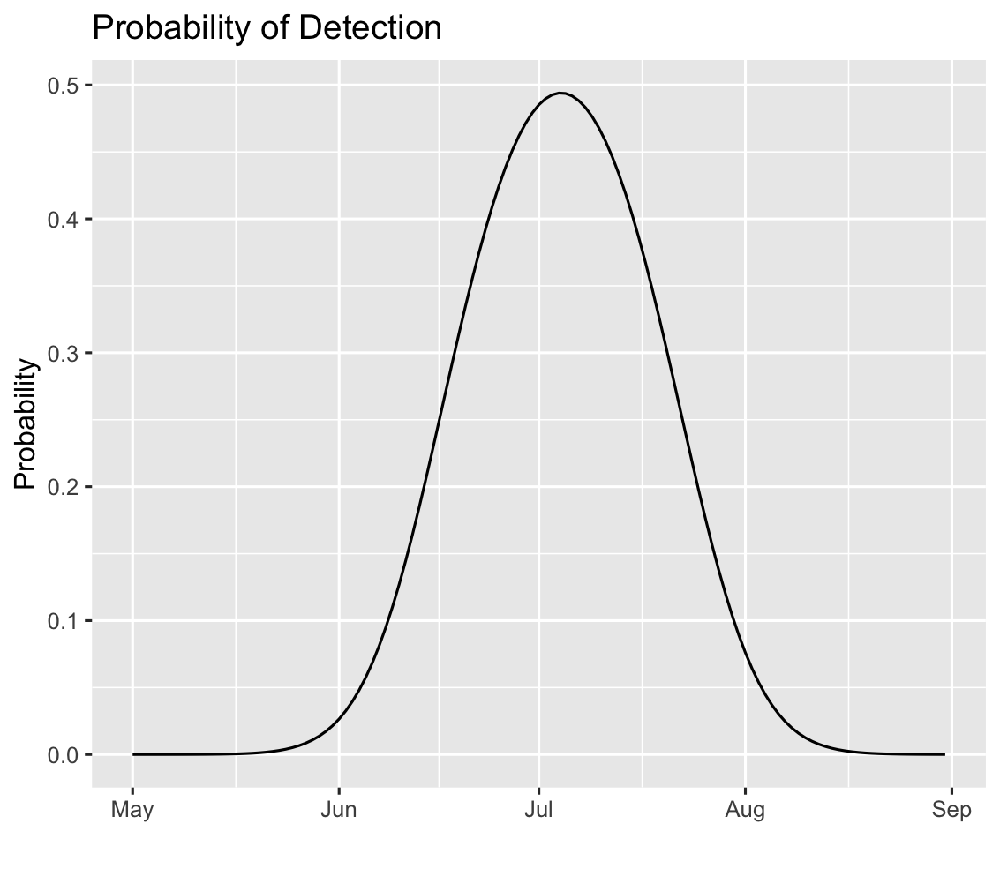
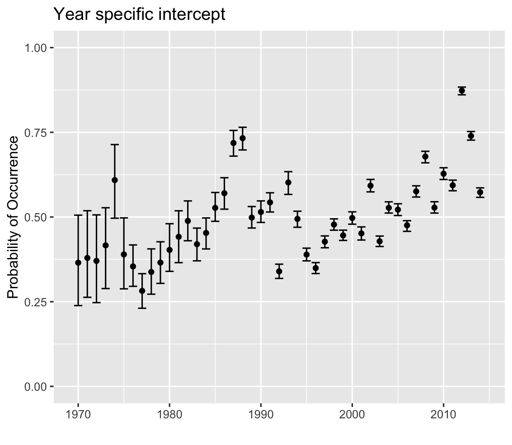
Analysing de distribution of Ringlet butterfly in the UK
We analysed the distribution of the Ringlet butterfly (Aphantopus hyperantus) using \(>\) 2 million records from 140,887 unique 1 km\(^2\) from the BNM programme between 1970 and 2014.
Occupancy model framework where
Relative list length and date of visit allow us to account for varying sampling effort and seasonality in detection probabilities.
Analysing this entire data set without any spatial effects only took 30 seconds compared to a 19h MCMC algorithm.
- including a spatial effect increased the running time to 5 minutes only on a standard Apple M2 Pro machine!
Opportunistic Data
Most of the times we we only have information of where species is available.
Opportunistic encounters produce unstructured data which constitute the majority of available information.
- Harnessing the power of opportunistic data is not an easy task!
| Advantages 😄👍 | Disadvantages 😔👎 |
|---|---|
| Extensive taxonomic, spatial and temporal coverage | Under-reporting of rare and inconspicuous species. |
| ye-catching species that are easily identifiable by participants. | Varying recording skills and uneven sampling effort. |
Sampling Bias in CS opportunistic data
Large volumes of CS data come from Opportunistic surveys where sampling effort is biased across space and time.
- People visit more certain places than others.
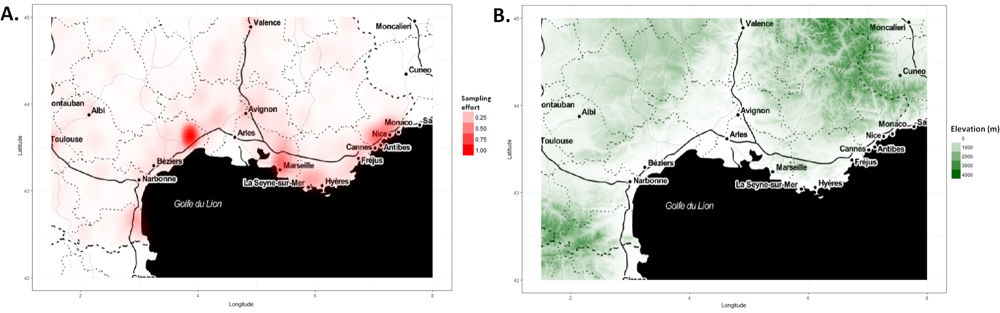
Elevation versus sampling effort (obtained through the Pl@net Net App) in the French mediterranean region (Figure taken from Botella et al. (2020)).
Small populations at lower elevation could be over-sampled.
If we assume sampling is evenly distributed, species occupancy at higher elevation would be under-estimated
Data Integration
Can we do better by integrating multiple data sources?
- Data integration: aims to describe explicitly the differences in how datasets were assembled by using distinct observation submodels for each data source.
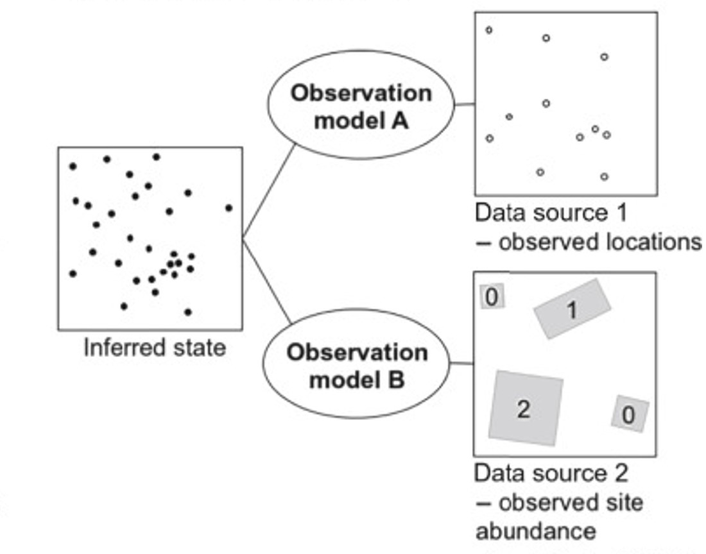
Obtained from (Isaac et al. 2020)
Data Integration
Can we do better by integrating multiple data sources?
Data integration: aims to describe explicitly the differences in how datasets were assembled by using distinct observation submodels for each data source.
Combining different data sources is challenging due to differences in study design, spatial and temporal coverage, and potential sampling biases.
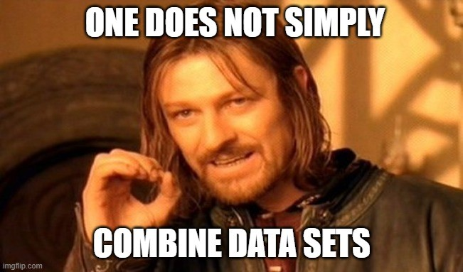
Thinned point process model
- The true locations \(\mathbf{s}=s_1,\ldots,s_m\) where a species occur are a realization of a Point Process, specifically a log-Gaussian Cox process (LGCP).
\[ \lambda(s)=\exp{X(s)'\beta + Z(s)} \]
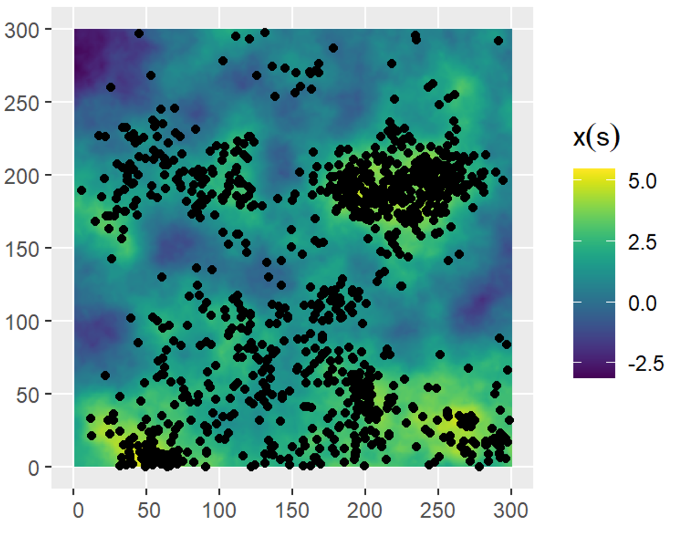
Thinned point process model
The true locations \(\mathbf{s}=s_1,\ldots,s_m\) where a species occur are a realization of a Point Process, specifically a log-Gaussian Cox process (LGCP).
The true point pattern is partially observed due to imperfect detection and accessibility constrains reflected by an uneven sampling effort.
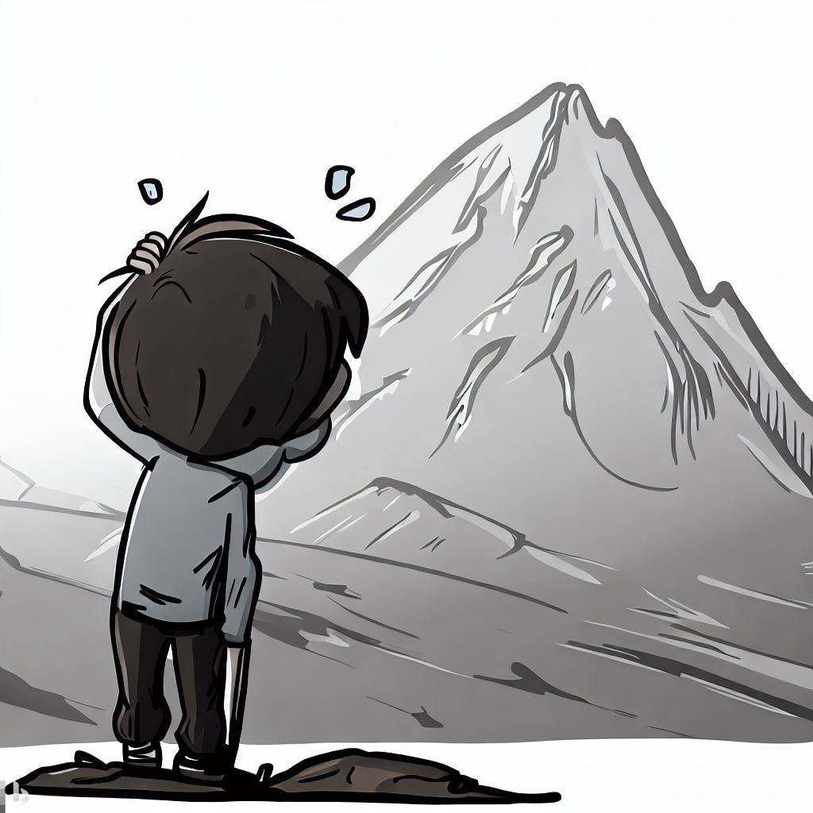
Thinned point process model
The true locations \(\mathbf{s}=s_1,\ldots,s_m\) where a species occur are a realization of a Point Process, specifically a log-Gaussian Cox process (LGCP).
The true point pattern is partially observed due to imperfect detection and accessibility constrains reflected by an uneven sampling effort
- The locations \(\mathbf{s}=s_1,\ldots,s_n\) where opportunistic encounters have actually occurred are the result of a thinned point process.
\[ \begin{aligned} \lambda^{pp}(s)&=\lambda(s)\times p(s)\\ \text{logit}(p(s)) &= \alpha^{pp}_0 + \alpha^{pp}_1\times g(s) + \ldots \end{aligned} \]
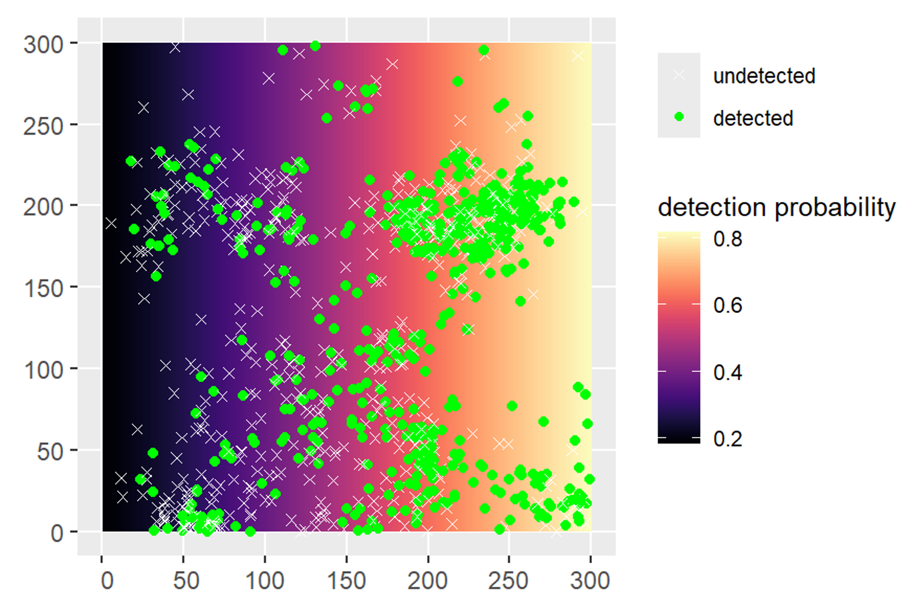
Estimation of the thinned point process model
The likelihood function for the thinned point process is given by:
\[ L_{thinn}(\beta,\alpha) = \exp\left\{\int_B\lambda(s) p(s) ds) \right\}\prod_i^m \lambda(s_i)p(s_i) \]
Simpson et al. (2016) proposed an approach to approximate both the stochastic integral and the evaluation of the field at the data points using INLA.
In
R-INLAwe can defined different model components as part of the additive predictor (e.g., the Stochastic Partial Differential Equation (SPDE) approach to a GRF with Matérn covariance).inlabruallows the predictor to be a non-linear function of the parameter vector through an iterative model fitting scheme.We can use
inlabrufixed point iteration method to estimate thinning probabilities \(p(s)\).
Integrated Species Distribution Model
- The point process model proposed for presence-only data is defined on a continuous space, but the occupancy model for survey data is defined in a discretised space.
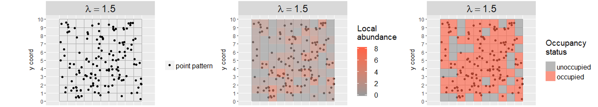
We can use the fact that the number of individuals in a bounded region can be characterized as \(N(A_i)\sim \mathrm{Poisson}(\int_{A_i}\lambda(s)~ds)\).
The probability that an areal unit \(A_i\) is occupied by a species is given by:
\[ \psi_i = \mathrm{Pr}\left[N(A_i)>0\right] = 1 - \exp\left(-\int{A_i}\lambda(s)~ds\right), \]
Integrated Species Distribution Model
The point process model proposed for CS data is defined on a continuous space, but the occupancy model for survey data is defined in a discretised space.
We can use the fact that the number of individuals in a bounded region can be characterized as \(N(A_i)\sim \mathrm{Poisson}(\int_{A_i}\lambda(s)~ds)\).
The probability that an areal unit \(A_i\) is occupied by a species is given by:
\[ \psi_i = \mathrm{Pr}\left[N(A_i)>0\right] = 1 - \exp\left(-\int{A_i}\lambda(s)~ds\right), \]
Thus, the intensity-based OM likelihood becomes:
\[ L(\psi_i,p_{ij}) = \left[\prod_i^N \left(1-\exp\left\{-\int_{A_i}\lambda(s) ds\right\}\right)\prod_j^{K_i}p_{ij}^{y_{ij}}(1-p_{ij})^{1-y_{ij}} \right] \times\\ \prod_{i=N+1}^M\left[ \left(1-\exp\left\{\int_{A_i}\lambda(s) ds\right\}\right) \prod_j^{K_i}(1-p_{ij})+\exp\left\{\int_{A_i} \lambda(s)ds\right\} \right]. \]
Integrated Species Distribution Model
The marginal distribution of each site detection history is given by
\[ L(\pmb{\psi},\textbf{p}|\mathbf{y}_1,\ldots,\mathbf{y}_M) = \prod_{i=1}^{M} \left[1-\exp\left\{-\int_{A_i}\lambda(s) ds\right\} \prod_j^{K_i} p_{ij}^{y_{ij}} (1-p_{ij})^{1-y_{ij}} + \mathbb{I}_{\sum_j y_{ij} = 0}\exp\left\{\int_{A_i} \lambda(s)ds\right\}\right] \]
In large-scale studies, species distributions are often monitored across relatively small patches.
If we assume a constant intensity within each cell then \(\int_{A_i}\lambda(s)ds = \lambda_i |A_i|\).
Integrated Species Distribution Model
The marginal distribution of each site detection history is given by
\[ L(\pmb{\psi},\textbf{p}|\mathbf{y}_1,\ldots,\mathbf{y}_M) = \prod_{i=1}^{M} \left[1-\exp\left\{-\int_{A_i}\lambda(s) ds\right\} \prod_j^{K_i} p_{ij}^{y_{ij}} (1-p_{ij})^{1-y_{ij}} + \mathbb{I}_{\sum_j y_{ij} = 0}\exp\left\{\int_{A_i} \lambda(s)ds\right\}\right] \]
In large-scale studies, species distributions are often monitored across relatively small patches.
If we assume a constant intensity within each cell then \(\int_{A_i}\lambda(s)ds = \lambda_i |A_i|\).
We can link the occupancy probabilities to the intensity function (\(\psi_i = 1 -\exp(|A_i|\lambda_i)\)) through the cloglog link (\(\mathrm{cloglog}(\psi) =\log[-\log(1-\psi_i)]\))
\[ \begin{aligned} \mathrm{cloglog}(\psi_i) &= \log(|A_i|) + \log(\lambda_i) \\ &= \log(|A_i|)+\beta_0 + \sum_{q=1}^P\beta_q x_{iq} + z_i\\ &= \beta_0^* + \sum_{q=1}^P\beta_q x_q(s) + z_i \end{aligned} \]
Integrated Species Distribution Model
The marginal distribution of each site detection history is given by
\[ L(\pmb{\psi},\textbf{p}|\mathbf{y}_1,\ldots,\mathbf{y}_M) = \prod_{i=1}^{M} \left[1-\exp\left\{-\int_{A_i}\lambda(s) ds\right\} \prod_j^{K_i} p_{ij}^{y_{ij}} (1-p_{ij})^{1-y_{ij}} + \mathbb{I}_{\sum_j y_{ij} = 0}\exp\left\{\int_{A_i} \lambda(s)ds\right\}\right] \]
In large-scale studies, species distributions are often monitored across relatively small patches.
If we assume a constant intensity within each cell then \(\int_{A_i}\lambda(s)ds = \lambda_i |A_i|\).
We can link the occupancy probabilities to the intensity function (\(\psi_i = 1 -\exp(|A_i|\lambda_i)\)) through the cloglog link (\(\mathrm{cloglog}(\psi) =\log[-\log(1-\psi_i)]\))
\[ \begin{aligned} \mathrm{cloglog}(\psi_i) &= \beta_0^* + \sum_{q=1}^P\beta_q x_q(s) + z_i \end{aligned} \]
- The likelihood of the integrated model becomes \(L_{\text{idm}}(\beta,\alpha,\gamma) = L_{pp}(\beta,\alpha) \times L_{occ}(\beta,\gamma)\)
Case Study: Modelling the Distribution of the black-throated blue warbler in Pennsylvania, USA.
- Occurrence data for the Black-throated blue warbler (Setophaga caerulescens) in Pennsylvania, USA are available from two sources:
The Pennsylvania Breeding Bird Atlas (BBA): Point count surveys collected through a standardized data collection protocol from 2005 to 2008 .
The second data set does not follow a standard data collection protocol, but instead are observations reported by citizen scientists to the eBird platform in 2008.

Modelling Black-throated blue warbler: Survey Data
- Detection/non-detection BBA survey data are available in a subregion of the Pennsylvania State.
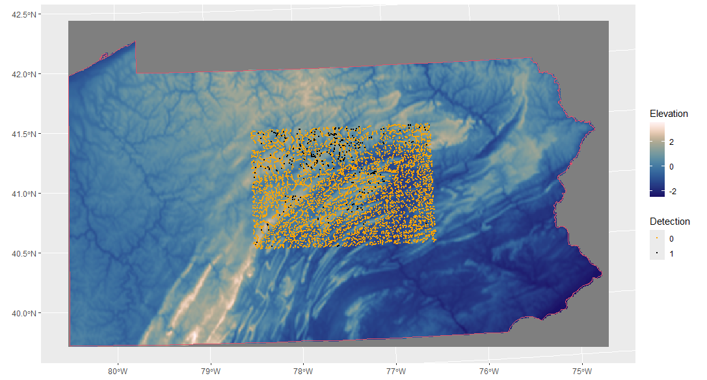
Modelling Black-throated blue warbler: Opportunistic Data
eBirdcitizen science data are usually biased due to uneven sampling effort.- Use the locations where other species have been observed as a proxy of sampling intensity
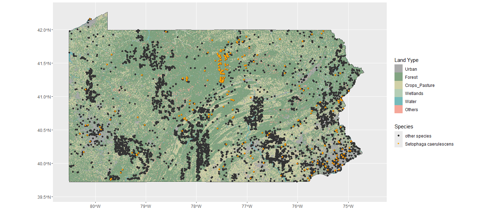
Locations 17 species of birds have been reported to eBird in 2008 along with the number of visits to a given location. The orange points indicate the locations where the Black-throated blue warbler has been observed.
Modelling Black-throated blue warbler: Modeling BBA and eBird together
inlabrufacilitates fitting multi-likelihood models that share a common state-space process parameters but have different observational processes.
\[ \begin{aligned} \log(\lambda(s)^{(\text{eBird})}) &= \beta^*_0 + \color{black}{\beta'X(s)} + \color{black}{Z(s)} + \log(p(s)) \\ \mathrm{logit}(p(s)^{(\text{eBird})}) &= \alpha_0 + \alpha_1 \times \hat{\text{effort}}(s)\\ \mathrm{cloglog}(\psi(s)^{(\text{BBA})}) &= |C_i| + \color{black}{\beta_0} + \color{black}{\beta'X(s)} + \color{black}{Z(s)} \\ \mathrm{logit}(p_{ij}^{(\text{BBA})}) &= \gamma_0 + \gamma_1 \times \text{Canopy} + \gamma_2 \times \text{LDI} \end{aligned} \]
- LDI is the land development index proposed by Brown and Vivas (2005). The smaller the index values is, the less the urban development is.
Modelling Black-throated blue warbler: Modeling BBA and eBird together
inlabrufacilitates fitting multi-likelihood models that share a common state-space process parameters but have different observational processes.
\[ \begin{aligned} \log(\lambda(s)^{(\text{eBird})}) &= \beta^*_0 + \color{red}{\beta'X(s)} + \color{red}{Z(s)} + \log(p(s)) \\ \mathrm{logit}(p(s)^{(\text{eBird})}) &= \alpha_0 + \alpha_1 \times \hat{\text{effort}}(s)\\ \mathrm{cloglog}(\psi(s)^{(\text{BBA})}) &= |C_i| + \color{red}{\beta_0} + \color{red}{\beta'X(s)} + \color{red}{Z(s)} \\ \mathrm{logit}(p_{ij}^{(\text{BBA})}) &= \gamma_0 + \gamma_1 \times \text{Canopy} + \gamma_2 \times \text{LDI} \end{aligned} \]
- LDI is the land development index proposed by Brown and Vivas (2005). The smaller the index values is, the less the urban development is.
Modelling Black-throated blue warbler: Modeling BBA and eBird together
inlabrufacilitates fitting multi-likelihood models that share a common state-space process parameters but have different observational processes.
Modelling Black-throated blue warbler: Modeling BBA and eBird together
inlabrufacilitates fitting multi-likelihood models that share a common state-space process parameters but have different observational processes.
components_idm = ~ Intercept(1) +
elevation(elevation_raster, model = "linear") +...+ spatial_field(geometry, model=matern) +
alpha_0(1,mean.linear= 3, prec.linear= 1/2.72) + alpha_1(1,mean.linear =1, prec.linear= 1/2.72)
formula_occ = inla.mdata(Y, X) ~ log(.data.$radius) + Intercept + elevation + ... + spatial_field
formula_thinn = geometry ~ Intercept + elevation + ...+ spatial_field +
log_detect(xy = geometry,p1 = alpha_0, p2 = alpha_1)
lik_occ = bru_obs(formula = formula_occ,
family = "occupancy",
data = bba_sf,
response_data = list(X = X_mat,Y = Y_mat),
control.family = list(control.link = list(model = "cloglog"),
link.simple = "logit"))
lik_thinn = bru_obs("cp",
formula = formula_thinn ,
data = ebird_sf ,
samplers = penn_state,
domain = list(geometry = mesh))
fit_IDM = bru(components_idm , lik_occ , lik_thinn)Modelling Black-throated blue warbler: Modeling BBA and eBird together
inlabrufacilitates fitting multi-likelihood models that share a common state-space process parameters but have different observational processes.
components_idm = ~ Intercept(1) +
elevation(elevation_raster, model = "linear") +...+ spatial_field(geometry, model=matern) +
alpha_0(1,mean.linear= 3, prec.linear= 1/2.72) + alpha_1(1,mean.linear =1, prec.linear= 1/2.72)
formula_occ = inla.mdata(Y, X) ~ log(.data.$radius) + Intercept + elevation + ... + spatial_field
formula_thinn = geometry ~ Intercept + elevation + ...+ spatial_field +
log_detect(xy = geometry,p1 = alpha_0, p2 = alpha_1)
lik_occ = bru_obs(formula = formula_occ,
family = "occupancy",
data = bba_sf,
response_data = list(X = X_mat,Y = Y_mat),
control.family = list(control.link = list(model = "cloglog"),
link.simple = "logit"))
lik_thinn = bru_obs("cp",
formula = formula_thinn ,
data = ebird_sf ,
samplers = penn_state,
domain = list(geometry = mesh))
fit_IDM = bru(components_idm , lik_occ , lik_thinn)Modelling Black-throated blue warbler: Modeling BBA and eBird together
inlabrufacilitates fitting multi-likelihood models that share a common state-space process parameters but have different observational processes.
components_idm = ~ Intercept(1) +
elevation(elevation_raster, model = "linear") +...+ spatial_field(geometry, model=matern) +
alpha_0(1,mean.linear= 3, prec.linear= 1/2.72) + alpha_1(1,mean.linear =1, prec.linear= 1/2.72)
formula_occ = inla.mdata(Y, X) ~ log(.data.$radius) + Intercept + elevation + ... + spatial_field
formula_thinn = geometry ~ Intercept + elevation + ...+ spatial_field +
log_detect(xy = geometry,p1 = alpha_0, p2 = alpha_1)
lik_occ = bru_obs(formula = formula_occ,
family = "occupancy",
data = bba_sf,
response_data = list(X = X_mat,Y = Y_mat),
control.family = list(control.link = list(model = "cloglog"),
link.simple = "logit"))
lik_thinn = bru_obs("cp",
formula = formula_thinn ,
data = ebird_sf ,
samplers = penn_state,
domain = list(geometry = mesh))
fit_IDM = bru(components_idm , lik_occ , lik_thinn)Results Integrated Model: posterior summaries
| Parameter | Posterior mean and 95% CrIs |
|---|---|
| Intercept (\(\beta_0\)) | -3.97 (-5.37,-1.61) |
| Canopy (\(\beta_1\)) | 0.87 (0.65,1.08) |
| Elevation (\(\beta_3\)) | 1.12 (0.93,1.3) |
| Slope (\(\beta_4\)) | 0.07 (-0.03,0.17) |
| Aspect (\(\beta_5\)) | -0.13 (-0.24,-0.03) |
| Intercept - detection eBird (\(\alpha_0\)) | 2.55 (1.67,3.44) |
| Effort (\(\alpha_1\)) | 1.46 (1.22,1.7) |
| Intercept - detection BBA (\(\gamma_0\))s | 0.93 (0.37,1.5) |
| Canopy (\(\gamma_1\)) | 0.31 (-0.14,0.76) |
| LDI (\(\gamma_1\)) | 0.68 (0.13,1.23) |
| \(\rho_z\) | 129.82 (79.92,211.03) |
| \(\sigma_z\) | 2.04 (1.47,2.82) |
Results Integrated Model: Predictions
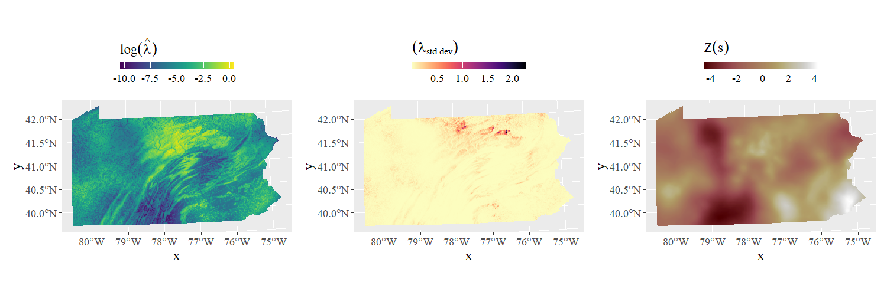
Discussion
- Over the last decade there has been bloom in the development of tools for fitting ISDMs (with quite a few wrappers around INLA).

Discussion
Over the last decade there has been bloom in the development of tools for fitting ISDMs (with quite a few wrappers around INLA).
Despite their popular use, the increasing adoption of ISDMs calls for careful scrutiny, as these models should not be adopted uncritically.
Discussion
Over the last decade there has been bloom in the development of tools for fitting ISDMs (with quite a few wrappers around INLA).
Despite their popular use, the increasing adoption of ISDMs calls for careful scrutiny, as these models should not be adopted uncritically.
It is unclear whether an ISDM for the Black-throated Blue Warbler provides any more meaningful information than a point process model.
\[ I_\theta(W)=n(\mathbf{s} \cap W) - \int_W\widehat{\lambda}_\theta(u) du \]
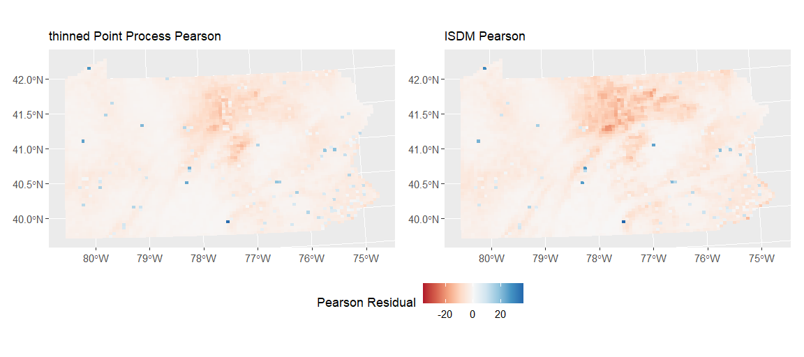
Pearson residuals for thinned PP and ISD models.
Discussion
Over the last decade there has been bloom in the development of tools for fitting ISDMs (with quite a few wrappers around INLA).
Despite their popular use, the increasing adoption of ISDMs calls for careful scrutiny, as these models should not be adopted uncritically.
It is unclear whether an ISDM for the Black-throated Blue Warbler provides any more meaningful information than a point process model.
This example has been presented as a case study for several works.
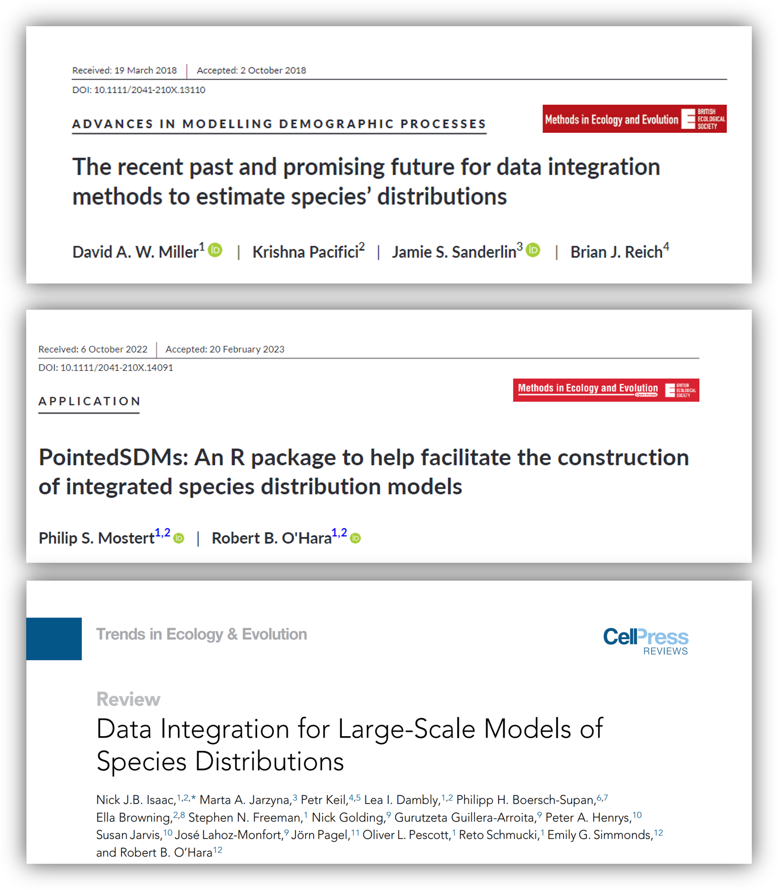
Discussion - further insights
Do parameter-rich integrated models improve our ecological understanding?
In many situations, the vast amount of unstructured data far exceeds the amount of survey data.
Are integrated models even necessary when unstructured data has been adequately modeled?
Discussion - further insights
Do parameter-rich integrated models improve our ecological understanding?
- How do we quantify the information gained by data integration?
In many situations, the vast amount of unstructured data far exceeds the amount of survey data.
Are integrated models even necessary when unstructured data has been adequately modeled?
Discussion - further insights
Do parameter-rich integrated models improve our ecological understanding?
In many situations, the vast amount of unstructured data far exceeds the amount of survey data.
- How can we weight high-quality survey data so that it isn’t overwhelmed by unstructured data?
Are integrated models even necessary when unstructured data has been adequately modeled?
Discussion - further insights
Do parameter-rich integrated models improve our ecological understanding?
In many situations, the vast amount of unstructured data far exceeds the amount of survey data.
Are integrated models even necessary when unstructured data has been adequately modeled?
- How should we evaluate whether biases have been adequately modeled?
Discussion - further insights
Do parameter-rich integrated models improve our ecological understanding?
In many situations, the vast amount of unstructured data far exceeds the amount of survey data.
Are integrated models even necessary when unstructured data has been adequately modeled?
Where do I learn more about INLA and inlabru
Website-tutorials
Discussion forums
Books
Blangiardo, M., & Cameletti, M. (2015). Spatial and spatio-temporal Bayesian models with R-INLA. John Wiley & Sons.
Gómez-Rubio, V. (2020). Bayesian inference with INLA. Chapman and Hall/CRC.
Krainski, E., Gómez-Rubio, V., Bakka, H., Lenzi, A., Castro-Camilo, D., Simpson, D., … & Rue, H. (2018). Advanced spatial modeling with stochastic partial differential equations using R and INLA. Chapman and Hall/CRC.
Wang, X., Yue, Y. R., & Faraway, J. J. (2018). Bayesian regression modeling with INLA. Chapman and Hall/CRC.
“An understanding of the natural world, and what’s in it as a source of not only great curiosity but great fulfillment.”
Sir. David Attenborough
Thanks for your attention
References
Belmont, Jafet, Sara Martino, Janine Illian, and Håvard Rue. 2024. “Spatio-Temporal Occupancy Models with INLA.” Methods in Ecology and Evolution 15 (11): 2087–2100. https://doi.org/10.1111/2041-210x.14422.
Botella, Christophe, Alexis Joly, Pascal Monestiez, Pierre Bonnet, and François Munoz. 2020. “Bias in Presence-Only Niche Models Related to Sampling Effort and Species Niches: Lessons for Background Point Selection.” Edited by Mirko Di Febbraro. PLOS ONE 15 (5): e0232078. https://doi.org/10.1371/journal.pone.0232078.
Brown, Mark T., and M. Benjamin Vivas. 2005. “Landscape Development Intensity Index.” Environmental Monitoring and Assessment 101 (1-3): 289–309. https://doi.org/10.1007/s10661-005-0296-6.
Guillera-Arroita, Gurutzeta. 2016. “Modelling of Species Distributions, Range Dynamics and Communities Under Imperfect Detection: Advances, Challenges and Opportunities.” Ecography 40 (2): 281–95. https://doi.org/10.1111/ecog.02445.
Isaac, Nick J. B., Marta A. Jarzyna, Petr Keil, Lea I. Dambly, Philipp H. Boersch-Supan, Ella Browning, Stephen N. Freeman, et al. 2020. “Data Integration for Large-Scale Models of Species Distributions.” Trends in Ecology & Evolution 35 (1): 56–67. https://doi.org/10.1016/j.tree.2019.08.006.
Mostert, Philip S., and Robert B. O’Hara. 2023. “PointedSDMs: An R Package to Help Facilitate the Construction of Integrated Species Distribution Models.” Methods in Ecology and Evolution 14 (5): 1200–1207. https://doi.org/10.1111/2041-210x.14091.
Simpson, D., J. B. Illian, F. Lindgren, S. H. Sørbye, and H. Rue. 2016. “Going Off Grid: Computationally Efficient Inference for Log-Gaussian Cox Processes.” Biometrika 103 (1): 49–70. https://doi.org/10.1093/biomet/asv064.